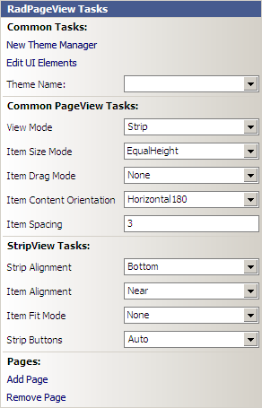
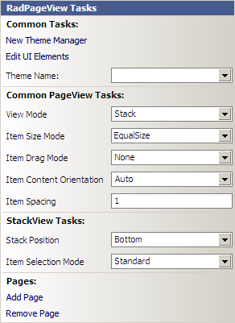
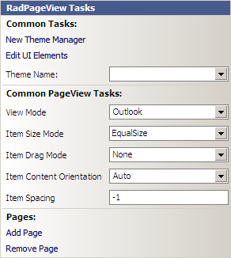

Design-time
Common properties
The Smart Tag for RadPageView lets you quickly access common tasks involved with building RadPageView elements and customizing its elements. There is a set of properties valid for each of the available view modes:
New Theme Manager: Adds a new RadThemeManagerhttp://www.telerik.com/help/winforms/vsb_thememanageradding.html component to the form.
Edit UI Elements: Opens a dialog that displays the Element Hierarchy Editorhttp://www.telerik.com/help/winforms/uieditoroverview.html. This editor lets you browse all the elements in the control, including the RadTreeView itself, tree nodes and the UI elements
that make up each node (e.g. expand and collapse elements and their associated ImagePrimitives objects).Theme Name: Select a theme name from the drop down list of themes available for that control. Selecting a theme allows
you to change all aspects of the controls visual style at one time.View Mode: Sets the view mode of RadPageView. The supported modes are Strip, Stack and
Outlook.Item Size Mode: Determines whether the items should have equal size. The supported modes are EqualHeight,
EqualWidth, EqualSize and Individual.Item Drag Mode: Determines the drag mode of the items. The supported modes are Preview and
Immediate.Item Content Orientation: Determines the orientation of the item content (image, text, and buttons' panel).
The supported orientations are Auto, Horizontal, Horizontal180,
Vertical90 and Vertical270.Item Spacing: Determines the spacing between the items in pixels.
Add Page: Clicking on this link will add a new page to RadPageView.Pages collection.
Remove Page: Clicking on this will remove the currently selected page in RadPageView.
There are also view-specific properties as shown below:
Strip view mode
Strip Alignment: Determines the position of the tab items in RadPageView in relation to the content area.
It can be Top, Left, Bottom or Right.Item Alignment: Determines the alignment of items within the strip layout.
Item Fit Mode: Determines the fit mode of the items. The available modes are None,
Fill, Shrink and ShrinkAndFill.Strip Buttons: Determines the style of the navigation buttons. The available styles are None,
Auto, LeftScroll, RightScroll, Scroll, VS2005Style, Close, ItemList, VS2008Style, All.
Stack view mode
Stack Position: Determines the location of the items in relation to the content area.
Item Selection Mode: Determines how the items in Stack view are selected and positioned.
Outlook view mode
There are no Outlook view related properties in the Action Menu of RadPageView.